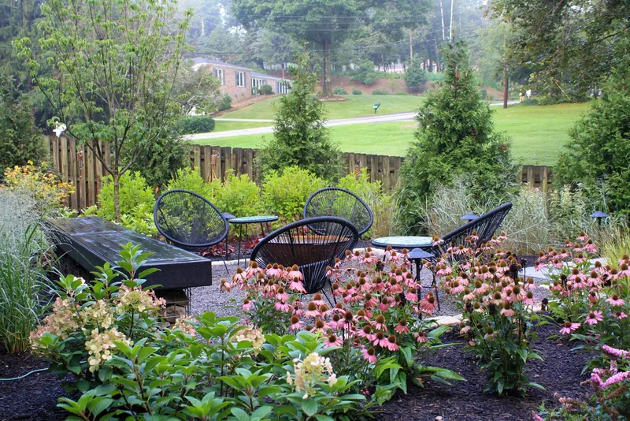
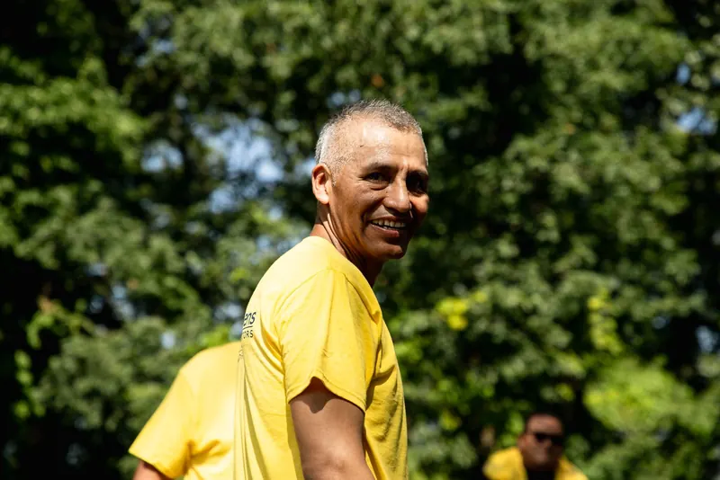
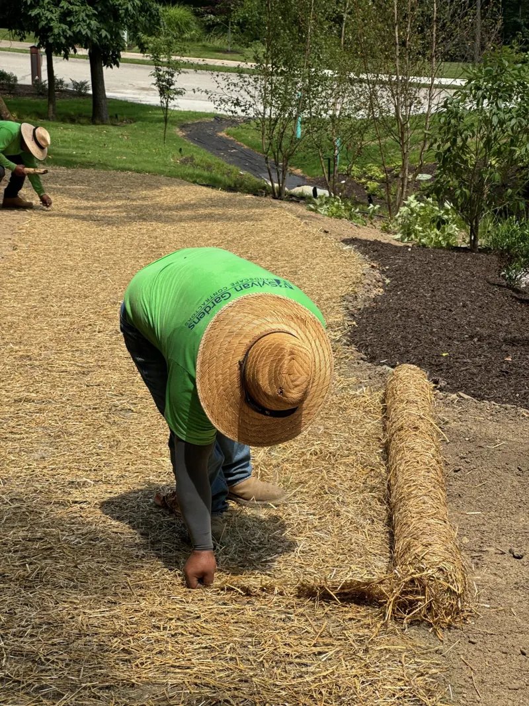
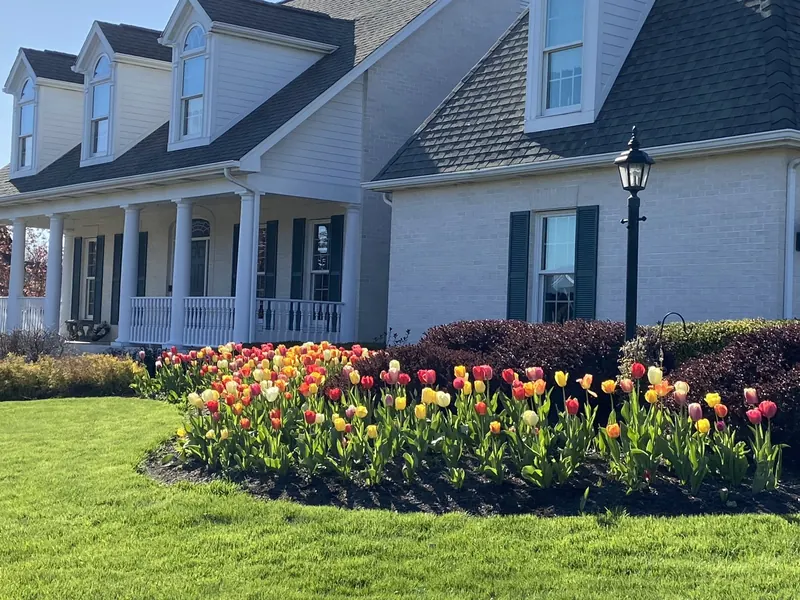
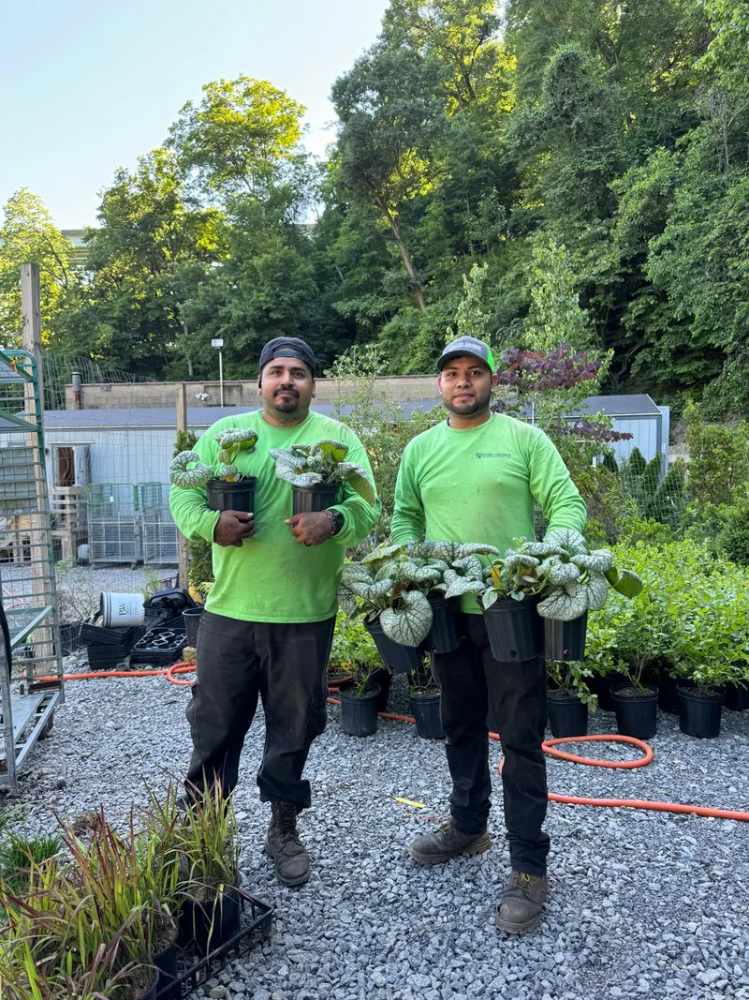
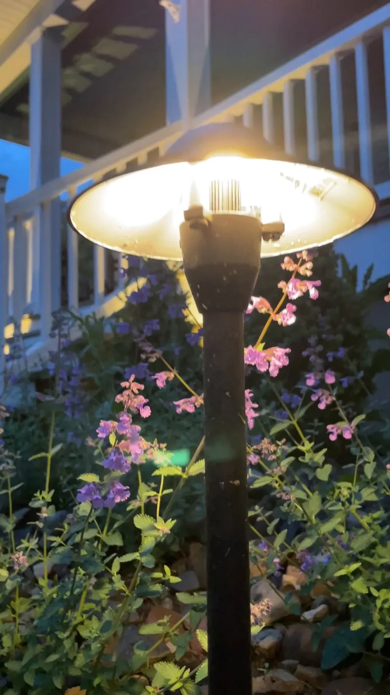

The Challenge
Sylvan Gardens is a residential and commercial landscaping company based in Ingomar, PA. When The Stoop came on in April 2024, the numbers told a frustrating story:
- Facebook reach had dropped from 2,030 (2022) to 609 (2023) — a 70% decline
- Instagram had grown slightly (reach 374 → 837, visits 168 → 1,300) but gained only 9 net followers in the year before The Stoop started (43 across both platforms)
- Content was overwhelmingly plant-focused — great visuals, but missing the humanity, transparency, and service range of the business
The assignment was deliberately narrow: organic social only. No paid media. No website development. Just strategy, content, and consistent execution across Facebook and Instagram, reported month by month for the first nine months and in a full-year report through April 2025.
The Strategy: Analysis First
Before posting anything new, we produced a Social Media Analysis & Strategy document comparing Sylvan Gardens' 2022 and 2023 performance across both platforms. The analysis surfaced three actionable insights:
- Prioritize Instagram Reels for engagement. IG had clear growth momentum — Reels were under-utilized and delivered the highest engagement per post
- Use Facebook for reach with older demographics. Don't abandon FB; use it differently. Same content, different framing
- Diversify content beyond plants. Add maintenance, installations, company culture, HR/recruiting, and horticulture education. A landscaping brand isn't just pretty flowers — it's skilled trades, proud employees, and long-form craftsmanship
Content Pillars
Once the strategy was approved, we built a content mix around five recurring pillars:
- Residential Installs — Showcase finished work at real client properties (with signed media releases). Patios, plantings, landscape lighting, stonework
- Employee Spotlights — Humanize the crew. Years of service, skills, personality. In the full-year report, three of the five top-performing Facebook posts were Sylvan Spotlight reels
- Maintenance & Operations — Behind-the-scenes action shots: mow operations, mulch, seasonal cleanups. Easy to produce, proof of scale
- Seasonal & Educational — Earth Day, Arbor Day, pollinator gardens, spring flower installs, native plantings. Ties the brand to the calendar
- HR & Recruiting — Positions landscaping as a serious career, not a summer job. Supports the hardest problem in the trade: hiring


Residential Installs

Employee Spotlights

Maintenance & Operations

Seasonal & Educational

HR & RecruitingProduction & Execution
We managed the entire pipeline through a monthly tracker with four status layers per post: Strategy & Planning, Production, Copywriting, and Platform Analytics. Each post had a Stoop-side and client-side approval gate before going live.
A few execution details that mattered:
- Signed media releases on every client property shoot — the legal foundation that makes residential work shareable
- Capped hashtag count at 15 per post, with a locally-oriented bank: #pittsburghlandscaping, #412, #pittsburghhomes, #landscapingdesign, etc.
- Native video first on Instagram, cross-posted to Facebook with adjusted captions
- Consistent cadence: 3–4 feed posts per week with daily story activity, enforced by the tracker



The Numbers


Context on why +181 is meaningful: in the year before The Stoop started (March 2023 to March 2024), Sylvan Gardens gained 43 net followers across Facebook and Instagram. Over the first full year of management it gained 181, more than four times as many, without spending a dollar on ads.
The 38K+ total impact number reflects impressions, reach, and engagement across Facebook and Instagram combined over the first nine months of monthly reports. The full-year report (April 2024 to April 2025) showed Instagram reach up from 575 to 6,690 accounts and Facebook reach up from 2,022 to 4,674, compared with the year before. Employee Spotlights and Install showcase posts drove the strongest per-post performance.
Why Organic Still Matters
It is fashionable in marketing to say "organic is dead." It isn't — it's just slower, harder, and more dependent on craft. For service businesses like landscaping, organic social delivers something paid can't:
- Trust. A homeowner hiring someone to dig up their yard needs to see the crew, the craftsmanship, and the finished work — over months, not minutes
- Recruiting gravity. The best trades workers pick employers partly based on how a company presents itself publicly
- Evergreen asset base. 9 months of content is a searchable portfolio — every new lead can scroll and see the quality
- Cost efficiency. No ad spend required. Content investment compounds. A one-time post can deliver value for years

Key Takeaways
- Start with analysis, not posting. A strategy document grounded in prior-year data is worth three months of guessing
- Diversify content pillars. A service business has many stories to tell — not just the final product
- Humanize the team. For Sylvan, Employee Spotlights and install showcases were the top performers. A service business sells its people as much as its finished work
- Enforce cadence with a tracker. Organic only works if posts actually happen — a shared production tracker makes that non-negotiable. We ran the same discipline on a themed content calendar for a Pittsburgh meal prep brand
- Don't abandon Facebook. Older demographics still live there. Repurpose, don't skip
Frequently Asked Questions
How long does organic social take to show results?
Expect 3–6 months of consistent posting to build meaningful momentum, and judge the results over a full year. For Sylvan Gardens, the clearest gains showed up in the full-year report: from April 2024 to April 2025, compared with the year before, Instagram reach grew from 575 to 6,690 accounts and net follower gain rose from 43 to 181.
Can you grow social media without paid ads?
Yes. Sylvan Gardens achieved 38K+ total impact in the first 9 months, and 181 net new followers over the first full year, with zero ad spend through consistent, diversified content.
See the full Sylvan Gardens case study or explore how organic social can work for your service business.
View Case Study Organic Social